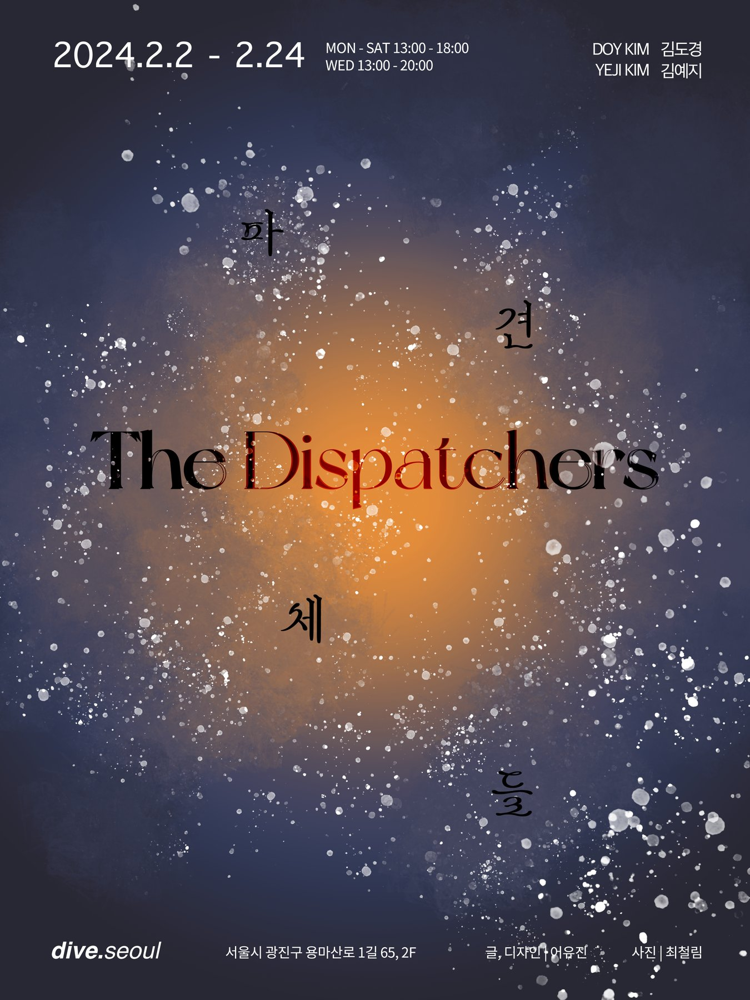
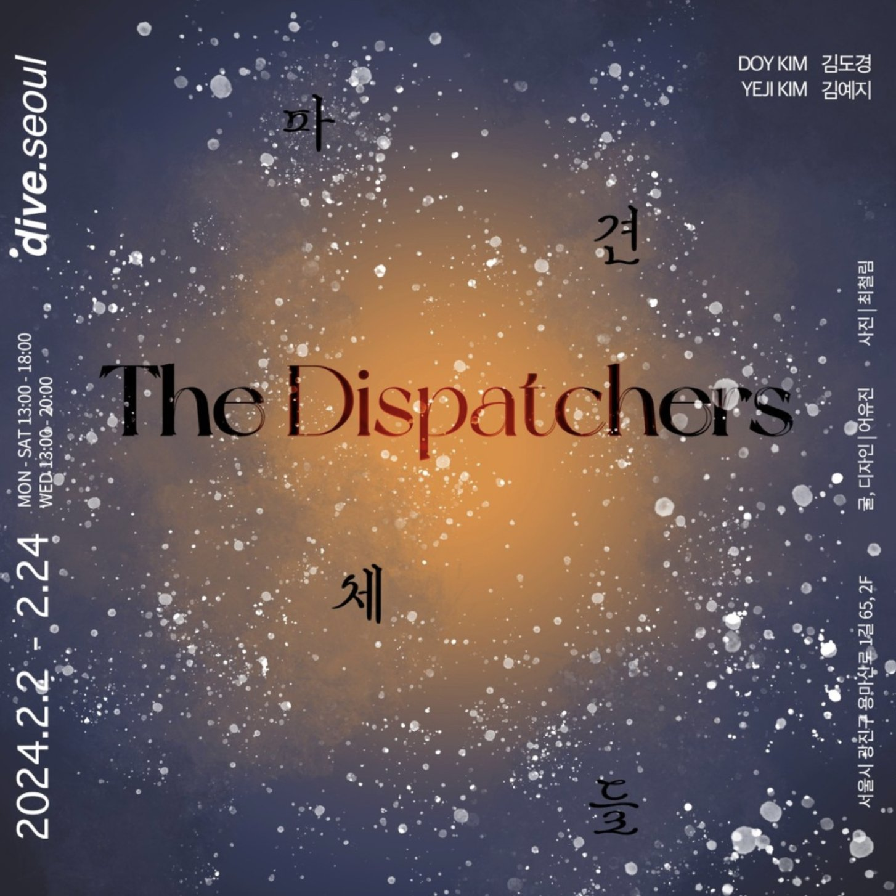
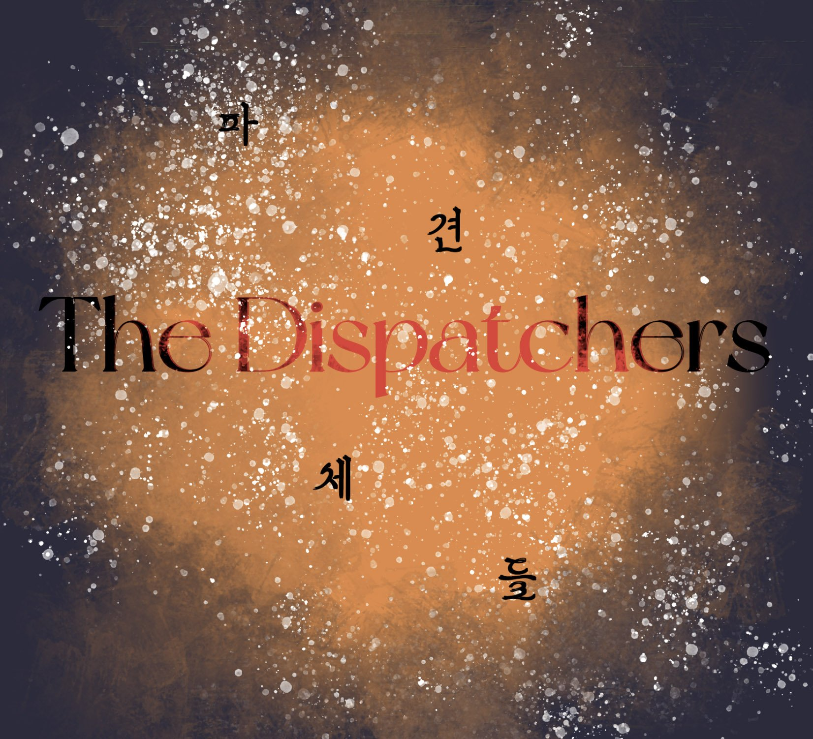

파견체들
- . . .
- Archivist 파견체들 / the Dispatchers — 다이브서울
- Artlecture 파견체들 / the Dispatchers
- Padograph 파견체들 / the Dispatchers
- Instagram dive.seoul 다이브서울



서문Statement (KR)
'도시는 기이한 아름다움을 품고 있었다. 색채로 일렁이는 세계. 곳곳에 강렬한 원색의 물감들을 흩뿌려놓은 것처럼 빠짐없이 찬란했다. 도시를 점령한 범람체들이 각자 경쟁이라도 하듯 빛깔을 드러내고 있었다.
눈 앞의 범람체들이 태린에게 속삭이는 듯했다. 어서 가까이 와서 자신을 살펴보라고. 직접 만지고 냄새를 맡고 먹어보라고. "범람체는 인간을 미치게 한다. 이성을 집어삼켜 광기와 죽음에 빠뜨린다…" 그 사실을 잊지 않으려고 태린은 소리를 내어 중얼거렸다.
이 도시는 생명이 아니라 죽음으로 가득찬 곳이라고. 인간은 이 색채들 속에서 살아갈 수 없다고.'
'나'라는 존재의 경계는 어디일지 의문을 품게 하는 김초엽 작가의 SF소설, 《파견자들》에 제시되는 가상세계의 모습은 위와 같다. 소설에서 주인공들은 지하에서 지상으로 파견된다. 무언가를 찾아 전달하고자 파견된 파견자들처럼 파견체들은 어떤 목적으로 세상에 생존하기 위해 파견된 것 일까.
김도경의 가상세계는 끈적하고 물컹한 질감으로 우리의 촉각을 곤두세우게 한다. 전시장을 둘러싼 디스토피아적인 풍경 속에서 거대한 동물 사체의 뼈, 죽은 생선의 뼈에서 살아 움직이며 꿈틀꿈틀 자라나는 것만 같은 촉수 이미지들, 심해에서 본 듯 낯익은 형상들을 찾아 하나하나 둘러보다 보면, 어느새 수많은 요소들이 새로운 세계로의 인식을 환기시킨다. 두 작가가 이번 전시를 통해 공유하며 작업한 이 기기괴괴한 심해의 생명체들은 관객으로 하여금 마치 외계같기도 하고 사후세계 같기도 한 신비로운 이(異)세계에 놓인 기분을 느끼게 한다.
다양한 SF적 요소들로 가득찬 공간의 한 가운데에 펼쳐진 김예지의 크리쳐(Creature) 생태계는 더욱 이세계로 초대된 확신을 심어준다. 그가 펼쳐낸 가상세계에서 크리쳐들은 마치 심해 생물이나 식물 혹은 외계 생명체같이도 보인다. 각기 다른 본연의 개성으로 자라난 크리쳐들은 저마다의 강렬한 생명력 넘치는 색채를 발산하며 공존하고 있다. 두 작가가 제시하는 가상세계의 크고 작은 요소들과 다양한 종(species)들은 생존을 목적으로 온전히 파견체로써의 역할을 수행한다. 이 귀여운 파견체들은 기묘하게 낯선 감각으로 시공간을 이어간다.
인류세로 인해 인간이 체감하는 이상기후와 자연 재해들은 어느덧 우리 일상 속 깊이 침투한 이야기가 되었다. 두 작가 또한 일종의 경각심이 내재된 새로운 스토리텔링을 보여준다. 우리는 어떻게 생존할 것 인가? 생(生)은 무엇일까? 생물학자 도나 해러웨이가 《지구 생존 가이드》에서 종의 경계를 넘어서는 잡종·기계·사이보그·뱀파이어·몬스터들과의 공생(sympoeisis) 가능성을 상상하는 우화를 이야기했듯, 둘의 가상세계는 새로운 종의 세상 속으로 우리를 초대한다. 김도경의 가상세계는 이분화된 천국과 지옥이 아닌 그 외의 새로운 사후세계로 구축되었다. 게임 속 퀘스트를 깨듯 여러 층으로 이뤄진 각 스테이지에서는 로켓이 날아가고, 눈사람이 태양을 갈망하고, 죽음에서 생명이 생겨난다. 또한 '생물학적으로 인종, 젠더는 불변으로 주어진 것이 아니라 사회·문화·정치적 관계에 의해 구성되는 것'이라는 해러웨이의 주장처럼 김예지의 크리쳐들은 그들이 자라온 환경과 먹어온 먹이, 생태계간의 관계에 따라 각 개성을 발현하게 된다. 인간과는 전혀 다른 모습을 하고 있지만 살아가는 모습과 성질이 인간과 같은 크리쳐들의 세상을 보다보면, 우리가 살아가는 일상과 눈 앞에 전시된 생태계 간의 경계는 눈녹듯 사라진다.